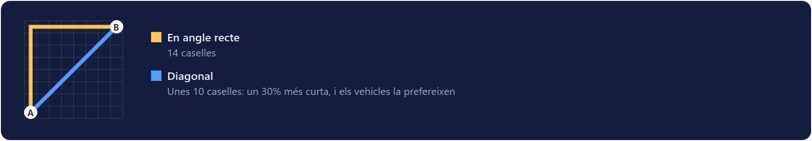

Carreteres i vies
Arrossegar línies, pendents, encreuaments i diagonals.
Arrossega amb Carretera (2) o Via (3) per construir. La nota al costat del ratolí mostra el preu, o el motiu pel qual no es pot construir.
- Els encreuaments es formen on es troben les línies.
- Totes dues pugen un pendent de cara, però mai el travessen de costat. Aplana abans el terreny irregular.
- Carretera i via es creuen en un pas a nivell si totes dues són rectes i el terreny és pla.
- Les ciutats construeixen els seus propis carrers. Els teus autobusos i camions els poden fer servir.
- La via és de qui la construeix: no pots construir sobre la d'un rival ni treure-la.
Diagonals
- Arrossega a uns 45 graus per posar una diagonal.
- Una diagonal és si fa no fa un 30% més curta que fer la volta a la cantonada, i els vehicles la prefereixen.
- Dues diagonals poden compartir una casella en terreny pla, de manera que la via doble funciona.
- Els senyals funcionen a les diagonals. Les estacions han de ser rectes.


Connectar dos llocs
- Tria Connecta carretera a Carreteres o Connecta via a Ferrocarril i fes clic on comença la línia. Assenyala on ha d'anar: la millor línia entre els dos punts apareix de seguida, amb diagonals i tot, i el seu preu a la nota al costat del ratolí.
- Fes clic per construir-la. Amb Maj+clic, en canvi, fixes la línia fins a aquell punt i continues des d'allà, per guiar-la al voltant d'un poble o pel terreny que triïs. Esc o un clic dret descarten l'inici.
- Si comences o acabes a la teva carretera, via o estació, la nova línia s'hi uneix. Mai no passa per sobre de les vies d'un rival.
- On el camí passa per aigua o per un turó massa costerut per pujar-lo, construeix un pont, de l'estil més barat que hi arribi, o un túnel, tret que una petita volta surti més barata. La nota els mostra amb el preu. Els extrems separats més de 160 caselles són massa lluny per a una sola línia: afegeix punts de pas.
- Un sol Ctrl+Z desfà tota la línia.
La carretera costa 260 $ per casella i la via 420 $. Tots els preus són a Costos de construcció.